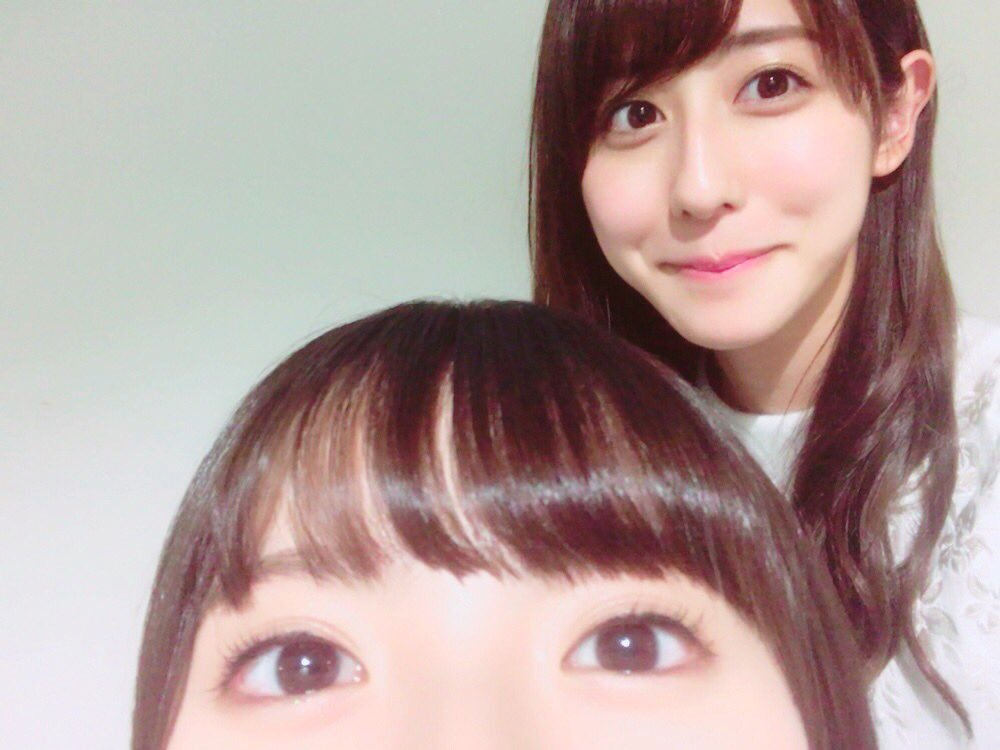
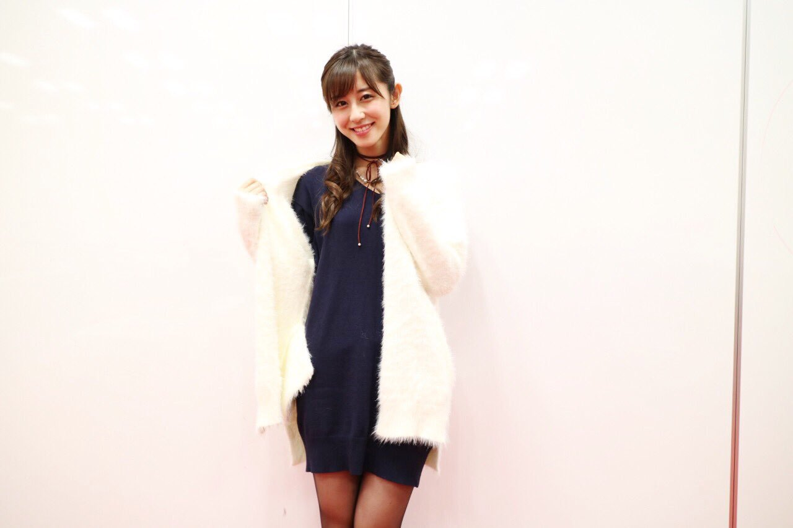

| 2016/12 04 Sun | 斎藤ちはる お墨付き。 |
ちはるーむへようこそ！

これ誰でしょう！！
と、クイズ出してもすぐ分かっちゃうよね(°_°)
難易度が低すぎるのは少しあれなので...
正解は飛鳥( ¨̮ )！
飛鳥曰く、
一発でこの写真が撮れるのは
凄いことらしい！
両目のバランス、
いい具合に顔の半分かどうか、
が判断基準だと思われます。
飛鳥のお墨付きいただきました◎笑
----------------------------♡
#chihaOOTD
今日は、のぎ天で着た私服を
紹介します！

ニットワンピースは
普段あまり着ないので、レア◎
MURUAのニットワンピース。
裾が広がらないニットなので着やすいです。
白のモコモコカーディガンは
先日の個別でも着ていたものを着まわし。
えんじ色のチョーカーも
その日と同じのを着まわし！
二つとも握手会の日と同じアイテムだけど
雰囲気が全然違うコーディネートにしました。
個握の日はスポーティでクールめだけど
のぎ天の日は大人っぽくガーリーに！
髪型はハーフアップおだんご！
ハーフアップした毛先を三つ編みして、
それをよくほぐしてから
丸めておだんごを作ってます。
この日はメイクさんにやってもらったんだけど
普段でも出来そうだから
セルフメイクの日も挑戦してみようかな！
----------------------------♡
♬ ChihaMusic
「ポーカーフェイス」阿部真央さん
あべまさんの歌詞が
素直で飾っていなくて心に刺さる。
中学生の頃から大好きな曲。
中学生の頃色々悩む事あったけど
笑顔という名のポーカーフェイスで
隠していた事もあったのかな〜とも
いま思い返すとそう思います。
"心晴れる日も雨降りすさぶ日も
誰にも悟られぬように 歩いてこう
素直な心が愛しい人の前で
特別輝くように"
サビの歌詞が好き。
昨日言うの忘れてた(> <)
今回の勇者ヨシヒコが面白すぎて
大好きな回になりました...！
川栄さん可愛いし上手だし
ムラサキメレブダンジョーの
学園バージョンの役所が最高だし
ヨシヒコのSバージョンも
ヨシヒコなのにヨシヒコじゃない感が
特別感があって素敵だったし
本当面白かった〜ヽ(；；)丿
そしてヨシヒコを見終わった後に
Yahoo!で「ヨシヒコ03」と検索して
ヨシヒコ版Yahoo!検索を見ながら
余韻に浸るのもまた良きかな。
おやすみ〜
斎藤ちはる